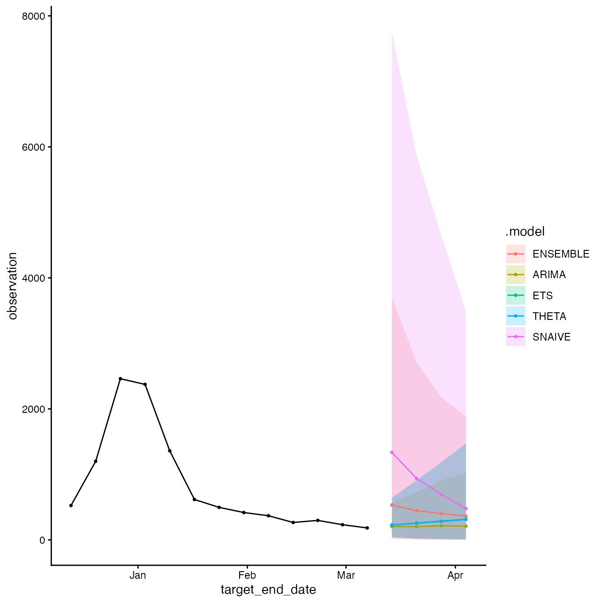

Introduction
The acciddasuite package provides tools for building
infectious disease forecasts and relies on the fable modeling
framework. The overall goal is to provide public health professionals
with an easily-adoptable approach to generating an ensemble of outputs
from statistical models, evaluating forecasts, and visualizing
outputs.
This vignette demonstrates a basic example of generating, evaluating, and visualizing forecasts following the standard forecasting workflow described by Hyndman & Athanasopoulos (2021).
Updated forecasting package information can be found here.
Forecasting Workflow
Forecast Planning
To get more information about how to know whether forecasting is the best approach for your task, follow the steps in this article.
Time Series Data
The first step of generating disease forecasts is providing time series/surveillance data; the data that the mdoel will assume has already happened.
If you would like to load your own surveillance, you can follow these steps for formatting.
For demonstration purposes, we will load surveillance data from the
CDC
National Health Safety Networkusing acciddasuite’s
get_data() function. The data dictionary is available here.
The get_data() function provides a convenient interface
to access this data using the epidatr
package.
library(dplyr)
library(ggplot2)
library(pipetime)
library(acciddasuite)
df <- get_data(pathogen = "flu", geo_values = "nc")
head(df)
#> # A tibble: 6 × 5
#> as_of location target target_end_date observation
#> <date> <chr> <chr> <date> <dbl>
#> 1 2026-03-08 NC wk inc flu hosp 2020-08-08 NA
#> 2 2026-03-08 NC wk inc flu hosp 2020-08-15 NA
#> 3 2026-03-08 NC wk inc flu hosp 2020-08-22 NA
#> 4 2026-03-08 NC wk inc flu hosp 2020-08-29 NA
#> 5 2026-03-08 NC wk inc flu hosp 2020-09-05 NA
#> 6 2026-03-08 NC wk inc flu hosp 2020-09-12 NATo examine df in more detail, you can access the example
csv file here: example_data.csv.
Time Series Cross-Validation
To evaluate model performance, we employ time series
cross-validation. We fit models using the data available up to a
specific cutoff point (eval_start_date), then forecast
h weeks ahead with expanding windows. The further back in
time eval_start_date is, the more computationally intensive
the evaluation step will be.
We visualize the data and decide on the
eval_start_date.
# For demonstration purposes, we only evaluate on the last 90 days of data
eval_start_date <- max(df$target_end_date) - 90Default models are:
SNAIVE(Seasonal Naïve): Assumes this week will look like the same week last year. The simplest possible baseline.ETS(Exponential Smoothing): A weighted average where recent weeks matter more than older ones. Adapts to trends and seasonal patterns.THETA: Splits the data into a long-term trend and short-term fluctuations, forecasts each separately, then combines them.ARIMA: Learns repeating patterns from past values to predict future ones. Auto-configured to find the best fit.
fcast = get_fcast(
df,
eval_start_date = eval_start_date,
top_n = 4, # Select top 4 models
h = 4 # forecast 4 weeks ahead
) |>
time_pipe("base fcast", log = "timing")
fcast
#> $hubcast
#> $hubcast$model_out_tbl
#> # A tibble: 400 × 9
#> model_id reference_date target horizon location target_end_date output_type
#> <chr> <date> <chr> <int> <chr> <date> <chr>
#> 1 ARIMA 2025-12-06 wk inc … 1 NC 2025-12-13 quantile
#> 2 ARIMA 2025-12-06 wk inc … 1 NC 2025-12-13 quantile
#> 3 ARIMA 2025-12-06 wk inc … 1 NC 2025-12-13 quantile
#> 4 ARIMA 2025-12-06 wk inc … 1 NC 2025-12-13 quantile
#> 5 ARIMA 2025-12-06 wk inc … 1 NC 2025-12-13 quantile
#> 6 ARIMA 2025-12-06 wk inc … 2 NC 2025-12-20 quantile
#> 7 ARIMA 2025-12-06 wk inc … 2 NC 2025-12-20 quantile
#> 8 ARIMA 2025-12-06 wk inc … 2 NC 2025-12-20 quantile
#> 9 ARIMA 2025-12-06 wk inc … 2 NC 2025-12-20 quantile
#> 10 ARIMA 2025-12-06 wk inc … 2 NC 2025-12-20 quantile
#> # ℹ 390 more rows
#> # ℹ 2 more variables: output_type_id <chr>, value <dbl>
#>
#> $hubcast$oracle_output
#> # A tibble: 282 × 6
#> location target_end_date target output_type output_type_id oracle_value
#> <chr> <date> <chr> <chr> <lgl> <dbl>
#> 1 NC 2020-10-17 wk inc flu … quantile NA 0
#> 2 NC 2020-10-24 wk inc flu … quantile NA 7
#> 3 NC 2020-10-31 wk inc flu … quantile NA 12
#> 4 NC 2020-11-07 wk inc flu … quantile NA 8
#> 5 NC 2020-11-14 wk inc flu … quantile NA 8
#> 6 NC 2020-11-21 wk inc flu … quantile NA 18
#> 7 NC 2020-11-28 wk inc flu … quantile NA 19
#> 8 NC 2020-12-05 wk inc flu … quantile NA 9
#> 9 NC 2020-12-12 wk inc flu … quantile NA 11
#> 10 NC 2020-12-19 wk inc flu … quantile NA 8
#> # ℹ 272 more rows
#>
#>
#> $score
#> Key: <model_id>
#> model_id wis interval_coverage_50 interval_coverage_95
#> <char> <num> <num> <num>
#> 1: ENSEMBLE 566.1915 0.4166667 1.0000000
#> 2: ARIMA 590.6836 0.3333333 0.7500000
#> 3: ETS 649.2414 0.3333333 0.6666667
#> 4: THETA 650.4553 0.3333333 0.6666667
#> 5: SNAIVE 650.8430 0.2500000 1.0000000
#> wis_relative_skill
#> <num>
#> 1: 0.9125984
#> 2: 0.9520753
#> 3: 1.0464598
#> 4: 1.0484165
#> 5: 1.0490414
#>
#> $plot
#>
#> attr(,"class")
#> [1] "accidda_cast"Visualize forecasts by accessing the plot element of the
forecast object:
fcast$plot
View forecast evaluation by viewing the score element of
the object:
fcast$score
#> Key: <model_id>
#> model_id wis interval_coverage_50 interval_coverage_95
#> <char> <num> <num> <num>
#> 1: ENSEMBLE 566.1915 0.4166667 1.0000000
#> 2: ARIMA 590.6836 0.3333333 0.7500000
#> 3: ETS 649.2414 0.3333333 0.6666667
#> 4: THETA 650.4553 0.3333333 0.6666667
#> 5: SNAIVE 650.8430 0.2500000 1.0000000
#> wis_relative_skill
#> <num>
#> 1: 0.9125984
#> 2: 0.9520753
#> 3: 1.0464598
#> 4: 1.0484165
#> 5: 1.0490414Adding extra_models
Additional models can be added by defining them in a list and passing
them to get_fcast(). The models should be compatible with
the fable framework (see fable
documentation for more information).
library(fable)
library(fable.prophet)
extra <- list(
CUSTOM_ARIMA = ARIMA(observation ~ pdq(1,1,0)),
PROPHET = prophet(observation ~ season("year")),
EPIESTIM = EPIESTIM(observation, mean_si = 3, std_si = 2, rt_window = 7)
)
fcast = get_fcast(
df,
eval_start_date = eval_start_date,
top_n = 4, # Select top 4 models
h = 3, # forecast 3 weeks ahead,
extra_models = extra
) |>
time_pipe("extra fcast", log = "timing")You can check how long each step took by calling
pipetime::get_log():
get_log()
#> $timing
#> timestamp label duration unit
#> 1 2026-03-20 09:32:02 base fcast 3.692525 secs
#> 2 2026-03-20 09:32:06 extra fcast 6.627328 secs